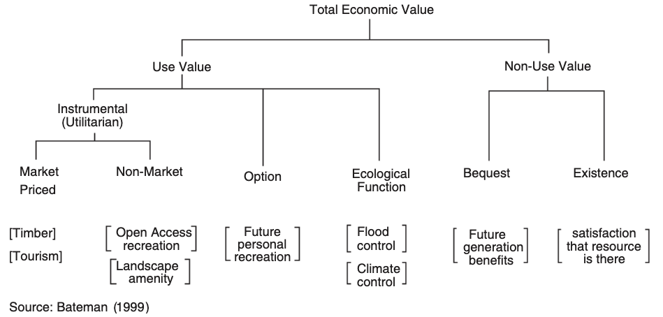
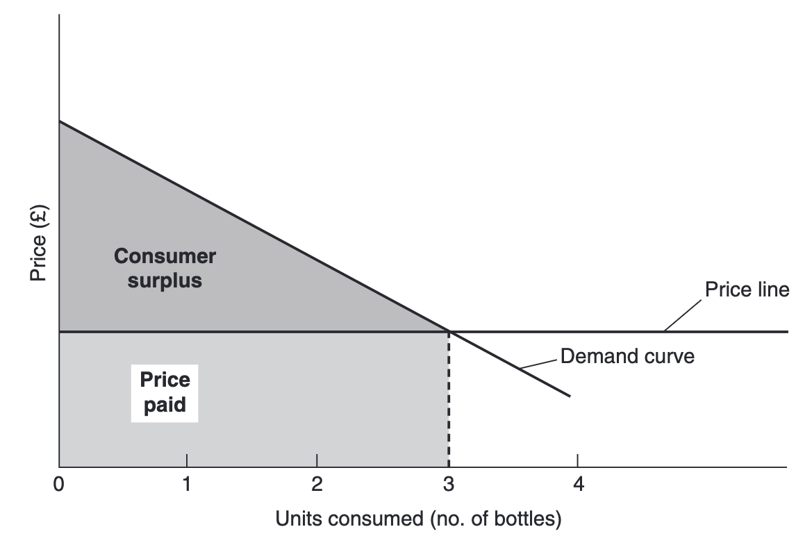
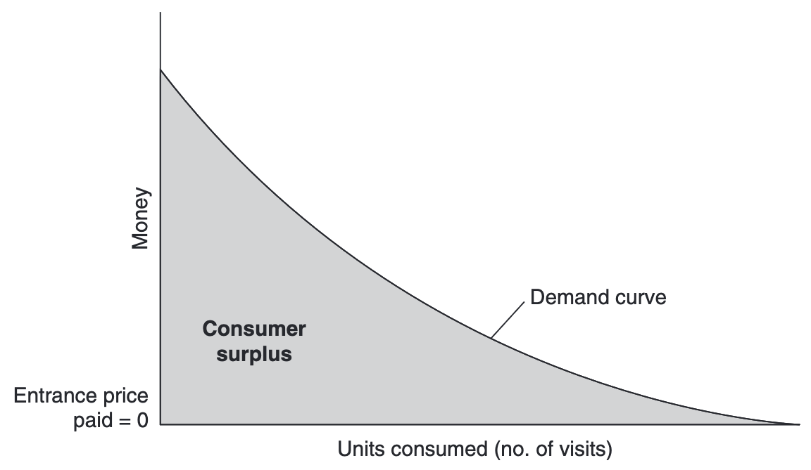

15 Environmental Goods Valuation
There is a wide variety of goods that fall under the rubric of environmental goods. Included would be commodities such as air quality and water quality. Also included would be amenity values such as a beautiful vista over land or ocean or, negatively characterized, a smoggy vista over a city. Even more distant from the conventional notion of a good might be the existence of a species.
No matter how esoteric or intangible the environmental good might be, its protection usually requires money. And it is usually appropriate to inquire how much people are willing to contribute to protect that environmental good. Eliciting true values is not easy; but that does not diminish the validity of the principle of demand for environmental goods and services.
The challenge to economists is to be comprehensive, viewing all aspects of the environment, over which people have preferences, within the paradigm of consumer theory. The environment is a very complex place. In understanding the value of the environment, it helps to use a classification scheme.
We can classify goods based on the nature of the pollution: air quality is one good, water quality is another.
We may classify goods based on the nature of the injured party: health effects of pollution, damage to agriculture, and damage to buildings and materials.
We may categorize goods based on how people perceive the damages.
Whether consumers obtain utility from the environment by “using” the environment (e.g., hiking through the woods) or through more esoteric means (e.g., thinking about elephants roaming in Africa).

From: Bateman,I.J. (1999) Environmental impact assessment, cost-benefit analysis and the valuation of environmental impacts, in Petts, J. (ed.) Handbook of Environmental Impact Assessment, Vol.1, Blackwell Science, Oxford, pp. 93–120.
15.1 A. Use value of environmental goods
Use value is the conventional notion of value associated with the consumption of a good. In the case of an environmental good, this could include current use (“I am currently visiting the park”), expected use (“I plan to visit the park later this year”), and possible use (“I might visit the park within the next 10 years”).
There are several primary avenues whereby environmental goods impact humans.
15.1.1 Direct impact
This would include direct health effects of breathing polluted air (both mortality-death-and morbidity-sickness) as well as non-health effects such as bothersome odors, noise, or visual impacts.
15.1.2 Indirect impact
A second avenue for environmental goods to impact humans is through damage to ecosystems. Agriculture, forests, and fisheries are ecosystems from which humans directly derive economic benefit. Clearly pollution that degrades the performance of these ecosystems is undesirable. More subtle ecosystem effects relate to recreational use of ecosystems.
15.2 B. Nonuse value of environmental goods
Nonuse value is a controversial aspect of value. Nonuse value is again in a person’s utility without the person actually applying the good, applying the word “using” very broadly. For instance, I may value a blue whale being able to swim freely in the open ocean, despite the fact that I have no intention of ever seeing a blue whale swim in the open ocean.
The three basic types of nonuse value are existence value, altruistic value, and bequest value.
15.2.1 Existence value
Existence value is the value a consumer attaches to knowing something exists (e.g., the African elephant example mentioned earlier). This would be in addition to any value associated with actual or potential “use”.
15.2.2 Altruistic value
Altruistic value derives not from my own consumption but from the fact that I derive benefit when someone else gains utility. So when my neighbor benefits from my cleaning my front yard, if I am altruistic, I obtain utility from the fact that my neighbor is better-off.
15.2.3 Bequest value
Bequest value is similar, though associated with the well-being of descendants. If I value passing a wilderness area on to the next generation, that wilderness has a bequest value to me, even if I never use it or intend to use it.
The purpose of dissecting value and placing it into these various categories is to understand the complexity whereby environmental goods confer value on consumers. Simply looking at the use value of an environmental asset may obscure much of the value. In fact some environmental assets have little use value but very significant nonuse value.
15.3 Measuring demand
Because of the absence of markets for environmental goods, measuring demand is not straightforward. There are two basic approaches to measuring demand: revealed preference and stated preference.
15.3.1 Revealed preference
In revealed preference, we observe areal choice ii some market and cleverly infer information on the trade-off between money and the environmental good. For instance, we may notice that two communities are identical except that one has high housing prices and clean air and the other has lower housing prices and dirty air. We may infer that the difference in housing prices reflects the value people place on clean air.
Within the category of revealed preference, there are two basic approaches to measuring demand, hedonics and household production.
15.3.1.1 Hedonic approach
In the hedonic approach, the goal is to see how the price of a conventional good (e.g., a house) varies as the amount of a closely related environmental good changes (eg., the air quality in the vicinity of the house). This relationship is then used to infer value.
15.3.1.2 Household production approach
The household production approach starts with the assumption that consumers will combine private goods with the environmental good to “produce” another good, which is the real source of utility.
15.3.2 Stated preferences
The second approach, stated preferences, basically involves asking people how they would trade of money for the environmental good if they had the opportunity to do so. Opinion pols and surveys are used to derive this information. This approach is controversial because of the absence of real choices; only real choices involve actual trades between money and environmental goods. Hypothetical choices lack a realism that may be necessary to obtain accurate information.
15.3.2.1 Contingent valuation
In the arena of stated preferences, the dominant approach is termed contingent valuation. Contingent valuation relies on direct revelation of demand from consumers. The name literally means “value contingent no there being a market”—if there were a market, how much would you pay for the environmental good? These values are obtained by directly questioning a sample of potential consumers of the environmental good.
15.3.2.1.1 Demand curve for a market priced good

15.3.2.1.2 Demand curve for an unpriced public good

Assignment:
Please check the KUTLMS.